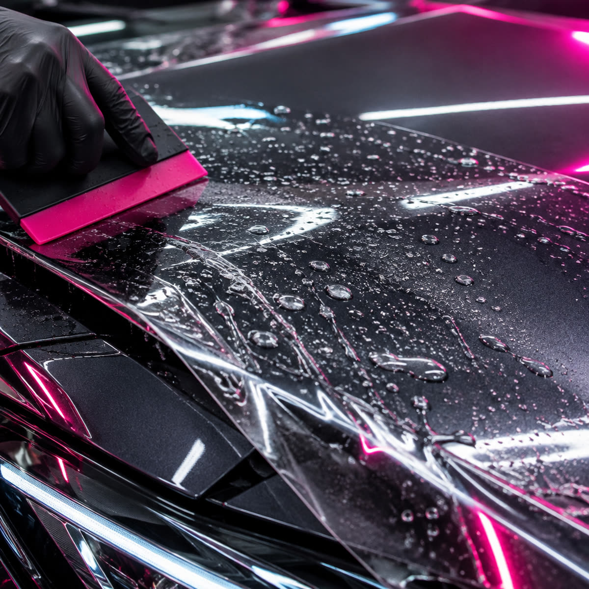

PPF: как это работает
Защитная антигравийная плёнка — прозрачный полиуретан с самовосстанавливающимся верхним слоем. Клеится на кузов и принимает удары камней, реагентов и песка на себя.

Почему лекало важнее рук
Лекало — это цифровой контур детали под конкретную модель. Плоттер режет по нему плёнку с точностью до долей миллиметра, поэтому кромки ровные, а подгонка не зависит от того, как мастер держит нож.
- Нож не касается кузова
- Нет «зазоров на глаз» и перекосов
- Кромка с подворотом, чтобы не поднималась
- Одинаковый результат на повторных авто
Что защищает каждая зона
Полная оклейка — единый слой по всему кузову. По зонам — дешевле и закрывает главное.
Капот
Камни от впереди идущих, гравий, сколы по кромке. Самая уязвимая деталь на трассе.
Передний бампер
Бордюры, парковка, мелкие контакты. Плёнка не даёт краске «расцвести» сколами.
Крылья и пороги
Песок из-под колёс и обувь у двери. Здесь сколы появляются раньше всего по низу.
Зоны риска
Кромки дверей, зеркала, зона погрузки, фары: туда чаще всего прилетает на парковке.
Полная оклейка
Весь кузов по лекалам: единая защита и одинаковый блеск по всей машине.
Плёнка, клей, монтаж
Используем качественные материалы и аккуратный профессиональный монтаж — это и есть разница между «наклеили» и «сделали».
Эластичный, держит удар, не желтеет. Глянцевый или матовый на выбор.
Мойка, обезжиривание, осмотр ЛКП: под плёнку нельзя загонять дефекты.
Укладка с водой, выгонка пузырей, подворот кромок, сушка.